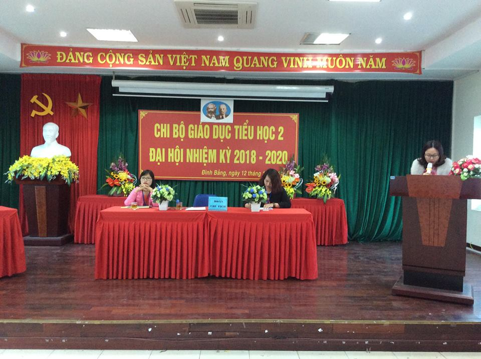

Đại hội chi bộ nhiệm kỳ 2018 - 2020 thành công tốt đẹp
Ngày 12/1/2018, Chi bộ Giáo dục tiểu học 2 – Trường Tiểu học Đình Bảng 2 đã trọng thể tổ chức Đại hội nhiệm kỳ 2018-2020. Đồng chí Nguyễn Thế Chín, Phó bí thư Đảng ủy, chủ tịch UBND phường Đình Bảng đã tới dự và chỉ đạo Đại hội cùng toàn thể đảng viên trong Chi bộ.
Ngày 12/1/2018, Chi bộ Giáo dục tiểu học 2 – Trường Tiểu học Đình Bảng 2 đã trọng thể tổ chức Đại hội nhiệm kỳ 2018-2020. Đồng chí Nguyễn Thế Chín, Phó bí thư Đảng ủy, chủ tịch UBND phường Đình Bảng đã tới dự và chỉ đạo Đại hội cùng toàn thể đảng viên trong Chi bộ.

Đại hội chi bộ nhiệm kỳ 2018 - 2020 thành công tốt đẹp
Ngày 12/1/2018, Chi bộ Giáo dục tiểu học 2 – Trường Tiểu học Đình Bảng 2 đã trọng thể tổ chức Đại hội nhiệm kỳ 2018-2020. Đồng chí Nguyễn Thế Chín, Phó bí thư Đảng ủy, chủ tịch UBND phường Đình Bảng đã tới dự và chỉ đạo Đại hội cùng toàn thể đảng viên trong Chi bộ.
Đại hội đã thông qua báo cáo kiểm điểm kết quả lãnh đạo thực hiện nhiệm vụ nhiệm kỳ trước và phương hướng lãnh đạo thực hiện nhiệm vụ nhiệm kỳ 2018 – 2020. Trong nhiệm kỳ qua Chi bộ nhà trường đã thực hiện tốt nghị quyết đề ra, triển khai và hoạt động có hiệu quả nghị quyết của Chi bộ, thực hiện tốt quy chế dân chủ trong nhà trường, thực hiện tốt việc ứng dụng công nghệ thông tin, đổi mới công tác quản lý nâng cao chất lượng dạy học, trường học thân thiện, học sinh tích cực, chất lượng giáo viên và học sinh của nhà trường đều tăng dần qua các năm học. Trong nhiệm kì qua Chi bộ đã lãnh đạo nhà trường lập nhiều thành tích xuất sắc. Với tinh thần nghiêm túc và trách nhiệm cao, đảng viên trong Chi bộ đã đóng góp nhiều ý kiến nhằm hoàn thiện báo cáo, nghị quyết của Đại hội. Báo cáo của Chi bộ đã đánh giá phân tích các mặt tích cực chỉ ra nguyên nhân hạn chế trong nhiệm kỳ qua, thảo luận phương hướng, nhiệm vụ và giải pháp khắc phục những tồn tại, tiếp tục lãnh đạo, chỉ đạo thực hiện công tác tham mưu về chuyên môn nghiệp vụ, công tác xây dựng Đảng, phấn đấu xây dựng Chi bộ đạt trong sạch vững mạnh hàng năm và cả nhiệm kỳ.
Phát biểu tại Đại hội đồng chí Nguyên Thế Chín – Phó bí thư Đảng ủy, chủ tịch UBND phường đã chúc mừng, ghi nhận và biểu dương những kết quả mà Chi bộ trường Tiểu học Đình Bảng 2 đạt được trong nhiệm kỳ qua. Đồng chí đề nghị tập thể Chi bộ trường Tiểu học Đình Bảng 2, tiếp tục nêu cao tình thần đoàn kết ra sức thi đua dạy tốt, học tốt.
Đại hội cũng đã nghiêm túc và dân chủ xem xét lựa chọn những Đảng viên tiêu biểu, có năng lực, phẩm chất chính trị vững vàng bầu vào Ban chấp hành Chi uỷ nhiệm kỳ mới gồm ba đồng chí.
1. Đ/c Nguyễn Thị Du – Bí thư chi bộ.
2. Đ/c Phạm Thị Thanh Huyền – Phó bí thư chi bộ.
3. Đ/c Trịnh Tố Anh – Chi ủy viên
Đại hội chi bộ nhiệm kỳ 2018 – 2020 thực sự nêu cao tính Đảng, tất cả đảng viên làm việc với tinh thần khẩn trương, khoa học, trung thực, thẳng thắn, tiếp thu nghị quyết Đại hội với tất cả nhiệt tình cách mạng. Với tinh thần mới, khí thế mới và quyết tâm mới, Chi bộ sẽ lãnh đạo các đoàn thể trong nhà trường, để biến Nghị quyết Đại hội thành hành động, cách mạng, thiết thực và đạt nhiều thắng lợi mới.
Sau đây là một số hình ảnh tại buổi đại hội:
